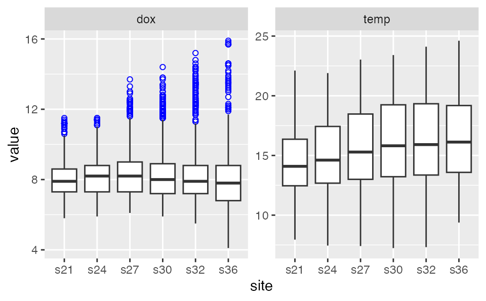
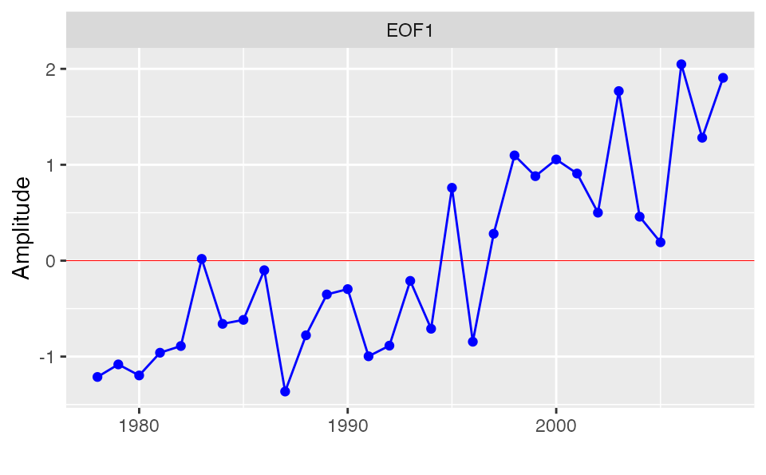
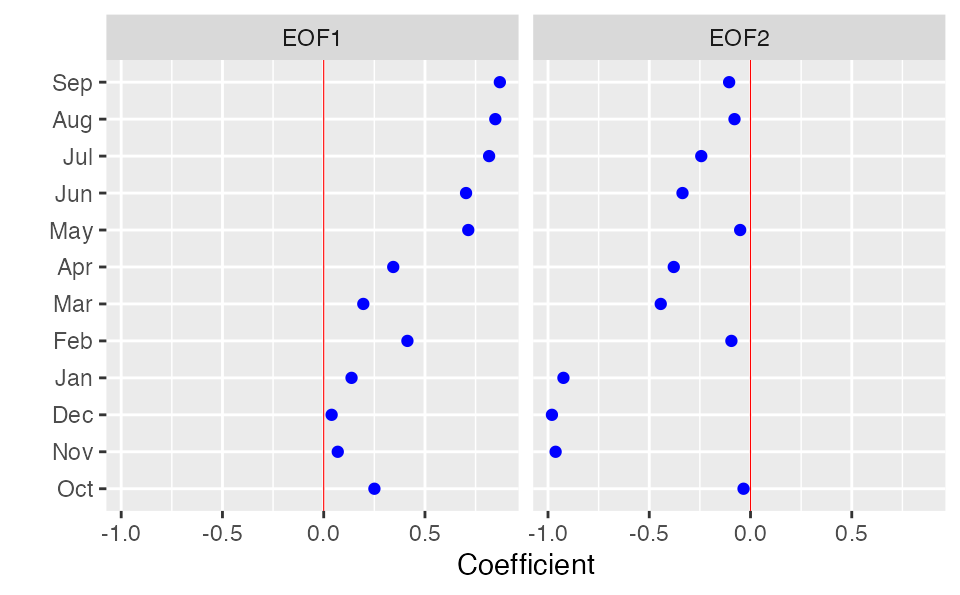
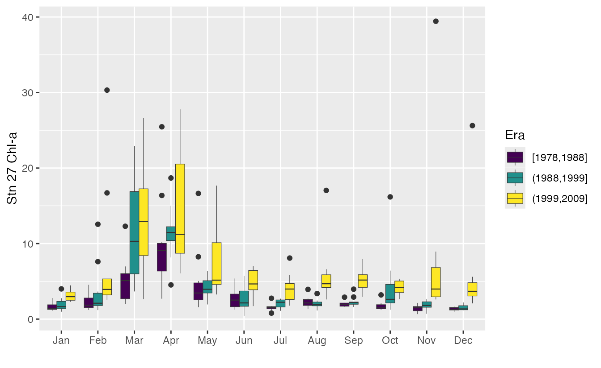
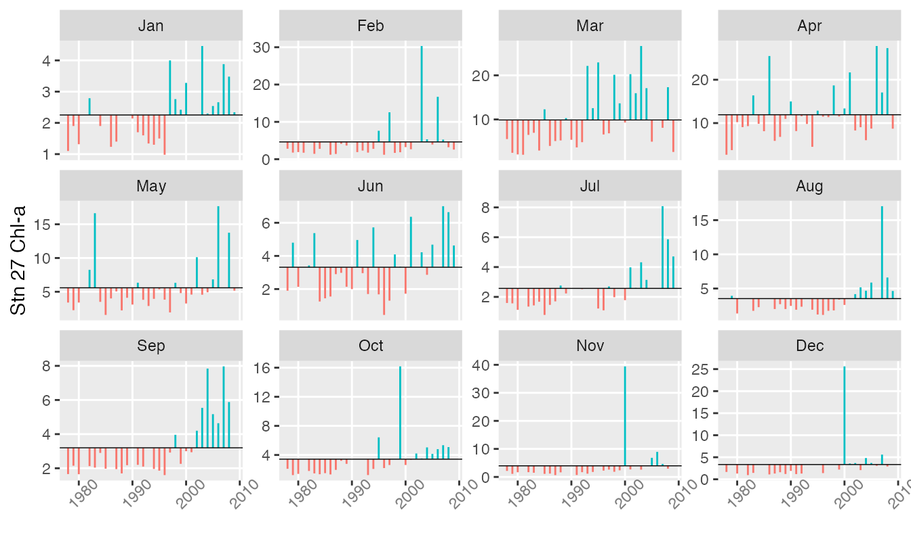
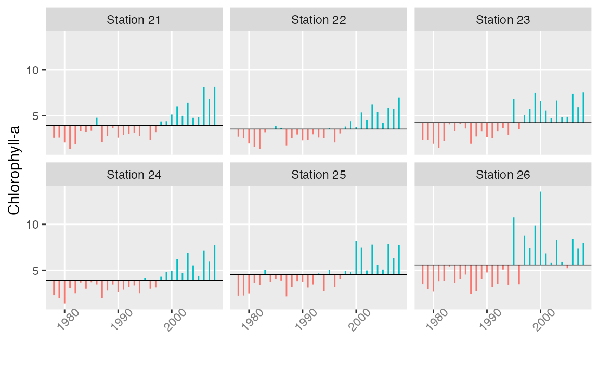

wql: Exploring water quality monitoring data
Alan D. Jassby and James E. Cloern
18 May, 2016
Source:vignettes/wql-package.Rmd
wql-package.RmdEdited by Joseph Stachelek: 23 March, 2021
Introduction
This package contains functions to assist in the processing and exploration of data from monitoring programs for aquatic ecosystems. The name wq stands for water quality. Although our own interest is in aquatic ecology, almost all of the functions should be useful for time series analysis regardless of the subject matter. The package is intended for programs that sample approximately monthly at discrete stations, a feature of many legacy data sets.

The functions are summarized in the diagram above, which illustrates a typical sequence of analysis that could be facilitated by the package when the data are in a data frame or time series. The functions associated with each step of the sequence are listed below their corresponding step. First, we might want to derive additional variables of interest. A few functions are provided here for variables common to water monitoring data. Next, we generate time series from the data in a two-stage process: the data.frame is first converted into a standardized form (with wqData) and then another function (tsMake) is applied to this new data object to generate the series. This two-stage process is not necessary, and – as implied in the diagram – you can skip it by using time series that already exist or that you construct in another way. But it has advantages when you’re constructing many different kinds of series from a data set, especially one that is unbalanced with respect to place and time. There are also a few special methods available to summarize this new data object. Next, we may need to reshape the time series in various ways for further analysis, perhaps also imputing missing values. Finally, we analyze the data to extract patterns using special plots, trend tests, and other approaches.
We illustrate some of the steps in the diagram using the accompanying data set sfbay.
library(wql)
Preparing data from an external file
Our starting point is a comma-delimited file downloaded on 2009-11-17 from the U.S. Geological Survey’s water quality data set for San Francisco Bay. The downloaded file, sfbay.csv, starts with a row of variable names followed by a row of units, so the first two lines are skipped during import and simpler variable names are substituted for the originals. Also, only a subset of stations and years is used in order to keep sfbay.csv small:
sfbay <- read.csv("sfbay.csv", header = FALSE, as.is = TRUE, skip = 2) names(sfbay) <- c('date', 'time', 'stn', 'depth', 'chl', 'dox', 'spm', 'ext', 'sal', 'temp', 'nox', 'nhx') sfbay <- subset(sfbay, stn %in% c(21, 24, 27, 30, 32, 36) & substring(date, 7, 10) %in% 1985:2004)
The resulting data frame sfbay is provided as part of the package, and its contents are explained in the accompanying help file.
head(sfbay)
## date time stn depth chl dox spm ext sal temp nox nhx
## 6835 1/23/1985 1120 21 1 5.6 NA 17 1.6 28.15 NA NA NA
## 6836 1/23/1985 1120 21 2 3.4 NA 17 1.6 28.58 NA NA NA
## 6837 1/23/1985 1120 21 6 3.1 NA 18 1.6 28.91 NA NA NA
## 6838 1/23/1985 1120 21 12 3.4 NA 21 1.9 29.36 NA NA NA
## 6841 1/23/1985 1222 24 1 6.2 NA 17 1.6 27.42 NA NA NA
## 6842 1/23/1985 1222 24 2 5.6 NA 18 1.6 27.42 NA NA NAThe next step is to add any necessary derived variables to the data frame. An initial data set will sometimes contain conductivity rather than salinity data, and we might want to use ec2pss to derive the latter. That’s not the case here, but let’s assume that we want dissolved oxygen as percent saturation rather than in concentration units. Using oxySol and the convention of expressing percent saturation with respect to surface pressure:
## [1] 6.9 7.5 9.7 6.2 NA NA NA 5.5 8.1 7.9## [1] 95.9 101.0 115.5 91.0 NA NA NA 82.2 100.0 95.6
The WqData class
We define a standardized format for water quality data by creating a formal (S4) class, the WqData class, that enforces the standards, and an accompanying generating function wqData (note lower-case w). This generating function constructs a WqData object from a data frame. The WqData object is just a restricted version of a data.frame that requires specific column names and classes.
We decided to accommodate two types of sampling time, namely, the date either with or without the time of day. The former are converted to the POSIXct class and the latter to the Date class. A special class DateTime is created, which is the union of these two time classes. Classes that combine date and time of day require an additional level of care with respect to time zone (Grothendieck and Petzoldt 2004).
Surface location is specified by a site code, as the intention is to handle discrete monitoring programs as opposed to continuous transects. Latitude-longitude and distances from a fixed point are implicit in the site code and can be recorded in a separate table (see sfbayVars). The depth is specified separately as a number. Other information that may not be depth-specific, such as the mean vertical extinction coefficient in the near-surface layer, can be coded by a negative depth number. The last two fields in the data portion of a WqData object are the variable code and the value. The variables are given as character strings and the values as numbers. As in the case of the sampling site, additional information related to the variable code can be maintained in a separate table (see sfbayVars).
Like all S4 classes, WqData has a generating function called new automatically created along with the class. This function, however, requires that its data frame argument already have a fairly restricted form of structure. In order to decrease the manipulation required of the imported data, a separate, less restrictive generating function called wqData is available. This function is more forgiving of field names and classes and does a few other cleanup tasks with the data before calling new. Perhaps most useful, it converts data from a wide format with one field per variable into the long format used by the WqData class. For example, sfbay can be converted to a WqData object with a single command:
sfb <- wqData(sfbay, c(1, 3:4), 5:12, site.order = TRUE, type = "wide", time.format = "%m/%d/%Y") head(sfb)
## time site depth variable value
## 1 1985-01-23 s21 1 chl 5.6
## 2 1985-01-23 s21 2 chl 3.4
## 3 1985-01-23 s21 6 chl 3.1
## 4 1985-01-23 s21 12 chl 3.4
## 5 1985-01-23 s24 1 chl 6.2
## 6 1985-01-23 s24 2 chl 5.6There is a summary method for this class that tabulates the number of observations by site and variable, as well as the mean and quartiles for individual variables:
summary(sfb)
## time site depth variable
## Min. :1985-01-23 s21:23933 Min. : 0.500 sal :23172
## 1st Qu.:1993-04-15 s24:15348 1st Qu.: 3.000 temp :23156
## Median :1996-06-12 s27:18122 Median : 6.000 chl :22063
## Mean :1996-07-24 s30:20445 Mean : 6.836 spm :16463
## 3rd Qu.:2000-07-13 s32:16905 3rd Qu.:10.000 dox :15505
## Max. :2004-12-14 s36: 7973 Max. :20.000 nox : 807
## (Other): 1560
## value
## Min. : 0.01
## 1st Qu.: 7.50
## Median : 13.90
## Mean : 17.78
## 3rd Qu.: 23.00
## Max. :983.00
## Plotting a WqData object produces a plot for each variable specified, each plot containing a boxplot of the values for each site. If no variables are specified, then the first 10 will be plotted.

Apart from summary and plot, one can subset a WqData object with the [ operator. All other existing methods for data frames will produce an object of class data.frame rather than one of class WqData.
Generating time series
Historical water quality data are often suitable for analyzing as monthly time series, which permits the use of many existing time series functions. tsMake is a function for WqData objects that creates monthly time series for all variables at a single site or for a single variable at all sites, when the option type = "ts.mon". If the quantile probability qprob = NULL, all replicates are first averaged and then the mean is found for the depth layers of interest. Otherwise the respective quantile will be used both to aggregate depths for each day and to aggregate days for each month. If no layers are specified, all depths will be used. If layer = "max.depths", the time series will be values of the deepest sample for each time, site and variable. The layer argument allows for flexibility in specifying depths, including a list of layers and negative depths used as codes for, say, near botton or entire water column.
## s21 s24 s27 s30 s32 s36
## [1,] 4.500000 5.900000 NaN 1.300000 2.65000 6.250
## [2,] NaN NaN NaN 1.600000 5.55000 NaN
## [3,] 5.858333 10.654167 12.291667 12.787500 11.86667 40.100
## [4,] 4.638889 5.916667 8.133333 8.388889 11.45556 4.525tsp(y)
## [1] 1985.000 2004.917 12.000The function plotTs is convenient for a quick look at the series. Lines join only adjacent data; otherwise, data are isolated dots.
plotTs(y[, 1:4], dot.size = 1.3, ylab = "Chlorophyll in San Francisco Bay", strip.labels = paste("Station", 21:24), ncol = 1, scales = "free_y")

If the option type = "zoo", then tsMake produces an object of class zoo containing values by date of observation, rather than a monthly time series.
## s21 s24 s27 s30 s32 s36
## 1985-01-23 4.500 5.90000 NaN 1.300000 2.650000 6.25
## 1985-02-27 NaN NaN NaN 1.600000 5.550000 NaN
## 1985-03-07 4.800 3.90000 5.200000 5.033333 5.166667 NaN
## 1985-03-13 2.600 9.35000 7.066667 5.066667 4.500000 NaN
## 1985-03-21 NaN 7.70000 13.300000 10.200000 4.700000 NaN
## 1985-03-29 10.175 21.66667 23.600000 30.850000 33.100000 40.10Reshaping
There are several functions for further reshaping of time series, preparing them for use in specific analyses. ts2df converts a monthly time series vector to a year \(\times\) month data frame. Leading and trailing empty rows are removed, additional rows with missing data are optionally removed, and the data frame can be reconfigured to represent a local water year:
chl27 <- sfbayChla[, 's27'] tsp(chl27)
## [1] 1978.000 2009.583 12.000## Jan Feb Mar Apr May Jun Jul Aug Sep Oct Nov Dec
## 1978 1.1 2.8 5.6 2.7 3.4 1.9 1.6 NA 1.7 2.1 2.2 1.7
## 1979 1.9 1.8 2.4 3.8 2.3 4.8 1.6 3.9 2.1 1.2 1.1 NA
## 1980 1.3 1.9 2.1 10.2 3.4 2.1 1.1 1.4 1.6 1.4 1.7 1.3
## 1981 NA 1.7 2.0 9.1 NA NA NA NA NA NA NA NA
## 1982 2.8 4.5 6.5 9.3 8.2 3.4 1.4 NA 2.1 1.8 1.7 0.9
## 1983 NA 1.4 7.0 16.4 16.6 5.4 1.4 1.7 2.0 1.5 1.5 1.4Another example of its use is shown in Empirical Orthogonal Functions below. A similar reshaping function is mts2ts, which converts a matrix time series to a vector time series for various analyses. It first aggregates the multivariate matrix time series by year, then converts it to a vector time series in which the seasons correspond to these annnualized values for the original variables. The seas parameter enables focusing the subsequent analysis on seasons of special interest, or to ignore seasons where there are too many missing data. The function can be used in conjunction with seaKen to conduct a Regional Kendall trend analysis, as described in Trends below:
y <- window(sfbayChla, start = 2005, end = c(2009, 12)) # 5 years, 16 sites round(mts2ts(y, seas = 2:4), 1) # focus on Feb-Apr spring bloom
## Time Series:
## Start = c(2005, 1)
## End = c(2009, 16)
## Frequency = 16
## [1] 5.8 4.7 6.0 4.6 5.5 5.6 5.9 6.3 6.5 7.6 7.5 7.8 8.5 8.8 8.0
## [16] 8.4 18.1 9.8 12.0 12.5 12.8 16.2 18.1 20.6 22.5 26.9 26.4 29.9 31.1 33.7
## [31] 32.1 33.2 7.9 6.6 7.8 7.9 7.9 9.2 10.1 10.2 10.5 11.9 12.0 12.1 13.2
## [46] 13.0 13.0 15.1 15.1 10.9 12.5 13.8 14.1 14.8 15.9 17.0 16.7 20.2 21.0 21.8
## [61] 22.3 23.5 23.4 24.0 4.7 4.5 4.6 4.7 4.7 4.4 4.6 5.2 5.4 6.0 6.8
## [76] 7.7 8.5 9.1 8.1 8.1Some functions (e.g., eof) do not permit NAs and some kind of data imputation or omission will usually be required. The function interpTs is handy for interpolating small data gaps. It can also be used for filling in larger gaps with long-term or seasonal means or medians. Here, we use it to bridge gaps of up to three months.
chl27 <- sfbayChla[, "s27"] chl27a <- interpTs(chl27, gap = 3)
The interpolated series is then plotted in red and the original series overplotted below.

Analyzing
Trends
The function mannKen does a Mann-Kendall test of trend on a time series and provides the corresponding nonparametric slope estimate. Because of serial correlation for most monthly time series, the significance of such a trend is often overstated and mannKen is better suited for annual series, such as this one for Nile River flow:
mannKen(Nile)
## $sen.slope
## [1] -2.6
##
## $sen.slope.rel
## [1] -0.002569361
##
## $p.value
## [1] 3.658263e-05
##
## $S
## [1] -1387
##
## $varS
## [1] 112728.3
##
## $miss
## [1] 0The negative trend in Nile River flow identified by mannKen is due largely to a shift in the late 19th century. The Pettitt test, which has a similar basis to the Mann-Kendall test (Pettitt 1979), provides a nonparametric estimate of the change-point. The shift happened in 1898–99 and coincides with the beginning of construction of the Lower Aswan Dam.
\end{center} \end{figure}

pett(Nile)
## $pettitt.K
## [1] 1617
##
## $p.value
## [1] 3.59e-07
##
## $change.point
## [1] 28
##
## $change.time
## [1] 1898
##
## $change.size
## [1] -260pett can also be used with a matrix:
y <- ts.intersect(Nile, LakeHuron) pett(y)
## pettitt.K p.value change.point change.time change.size
## Nile 1362 7.83e-06 24 1898 -255.50
## LakeHuron 1532 2.88e-07 46 1920 -1.54Both mannKen and pett can also handle matrices or data frames, with options for plotting trends in the original units per year or divided by the median for the series. The first option is suitable when time series are all in the same units, such as chlorophyll-a measurements from different stations. The second makes sense with variables of different units but is not suitable for variables that can span zero (e.g., sea level, or temperature in \(^\circ\)C) or that have a zero median. Plotted variables can be ordered by the size of their trends, statistical significance is mapped to point shape, and trends based on excessive missing data are omitted. When aggregating monthly series to produce an annual series for trend testing, there is a utility function tsSub that allows subsetting the months beforehand (meanSub is actually more efficient when aggregation is the goal). It can be useful for avoiding months with many missing data, or to focus attention on a particular time of year:
y <- sfbayChla y1 <- tsSub(y, seas = 2:4) # focus on Feb-Apr spring bloom y2 <- aggregate(y1, 1, mean, na.rm = FALSE) signif(mannKen(y2), 3)
## sen.slope sen.slope.rel p.value S varS miss
## s21 0.224 0.0619 2.86e-04 175 2300 0.286
## s22 0.168 0.0501 2.20e-04 188 2560 0.286
## s23 0.208 0.0587 8.44e-05 200 2560 0.143
## s24 0.209 0.0573 5.51e-05 216 2840 0.000
## s25 0.216 0.0452 6.73e-03 131 2300 0.286
## s26 0.222 0.0347 7.31e-03 144 2840 0.000
## s27 0.268 0.0476 3.92e-04 190 2840 0.000
## s28 0.231 0.0395 9.65e-03 132 2560 0.000
## s29 0.208 0.0326 1.87e-02 120 2560 0.000
## s30 0.242 0.0378 1.40e-02 132 2840 0.000
## s31 0.172 0.0223 1.33e-01 73 2300 0.286
## s32 0.200 0.0234 1.01e-01 84 2560 0.286
## s33 0.335 0.0330 1.73e-01 43 949 0.571
## s34 0.254 0.0266 4.01e-01 25 817 0.714
## s35 0.196 0.0237 4.05e-01 23 697 0.714
## s36 0.191 0.0231 4.05e-01 23 697 0.714A main role for mannKen in this package is as a support function for the Seasonal Kendall test of trend (Hirsch, Slack, and Smith 1982). The Seasonal Kendall test combines information about trends for individual months (or some other subdivision of the year such as quarters) and produces an overall test of trend for a series. mannKen collects certain information on the pattern of missing data that is then used to determine if a Seasonal Kendall test is warranted. In particular, there is an option to report a result only if more than half the seasons are each missing less than half the possible comparisons between the first and last 20% of the years (Schertz, Alexander, and Ohe 1991):
chl27 <- sfbayChla[, "s27"] seaKen(chl27)
## $sen.slope
## [1] 0.1083333
##
## $sen.slope.rel
## [1] 0.04893086
##
## $p.value
## [1] 1.117981e-25
##
## $miss
## [1] 0.083An important role, in turn, for seaKen in this package is as a support function for seaRoll, which applies the Seasonal Kendall test to a rolling window of years, such as a decadal window. There is an option to plot the results of seaRoll. seaKen is subject to distortion by correlation among months, but the relatively small number of years per window in typical use does not allow for an accurate correction:
seaRoll(chl27, w = 10)
## sen.slope sen.slope.rel p.value
## 1978 0.00000000 0.000000000 1.000000e+00
## 1979 0.02583333 0.016666667 3.568946e-01
## 1980 0.05555556 0.026240809 8.423384e-02
## 1981 0.05776786 0.025617258 2.267009e-01
## 1982 0.01600000 0.009969325 6.251578e-01
## 1983 0.04000000 0.021052632 7.845420e-02
## 1984 0.06800000 0.027777778 4.973298e-02
## 1985 0.06347222 0.027681992 3.808146e-02
## 1986 0.04000000 0.019295047 1.255508e-01
## 1987 -0.02166667 -0.008978819 5.248005e-01
## 1988 -0.03642857 -0.015035413 3.054480e-01
## 1989 0.00500000 0.001312336 9.744385e-01
## 1990 0.09428571 0.036047681 1.088968e-01
## 1991 0.13800000 0.053256303 5.650545e-03
## 1992 0.18000000 0.068702290 8.592198e-05
## 1993 0.26500000 0.117241379 7.397553e-06
## 1994 0.27000000 0.114394332 1.948646e-06
## 1995 0.28666667 0.120610687 7.090807e-06
## 1996 0.31600000 0.118891320 3.829067e-07
## 1997 0.26000000 0.078260870 3.069881e-04
## 1998 0.31550000 0.089193677 9.162416e-05
## 1999 0.30900000 0.078921416 2.609064e-05
## 2000 0.17500000 0.043028611 1.807407e-02The Seasonal Kendall test is not informative when trends for different months differ in sign. The function seasonTrend enables visualization of individual monthly trends and can be helpful for, among other things, deciding on the appropriateness of the Seasonal Kendall test. The Sen slopes are shown along with an indication, using bar colour, of the Mann-Kendall test of significance. The bar is omitted if the proportion of missing values in the first and last fifths of the data is less than 0.5.
x <- sfbayChla seasonTrend(x, plot = TRUE, ncol = 2, scales = 'free_y')
The function trendHomog can also be used to test directly for the homogeneity of seasonal trends (Belle and Hughes 1984):
x <- sfbayChla[, 's27'] trendHomog(x)
## $chi2.trend
## [1] 106.3295
##
## $chi2.homog
## [1] 10.17219
##
## $p.value
## [1] 0.4255185
##
## $n
## [1] 11A Regional Kendall test is similar to a Seasonal Kendall test, with annual data for multiple sites instead of annual data for multiple seasons (Helsel and Frans 2006). The function mts2ts (Reshaping) facilitates transforming an annual matrix time series into the required vector time series for seaKen, with stations playing the role of seasons. As with seasons, correlation among sites can inflate the apparent statistical significance, so the test is best used with stations from different subregions that are not too closely related, unlike the following example:
chl <- sfbayChla[, 1:12] # first 12 stns have good data coverage seaKen(mts2ts(chl, 2:4)) # regional trend in spring bloom
## $sen.slope
## [1] 0.2155
##
## $sen.slope.rel
## [1] 0.04263112
##
## $p.value
## [1] 4.539847e-24
##
## $miss
## [1] 0Empirical Orthogonal Functions
Empirical Orthogonal Function (EOF) analysis is a term used primarily in the earth sciences for principal component analysis applied to simultaneous time series at different spatial locations. Hannachi, Jolliffe, and Stephenson (2007) provide a comprehensive summary. The function eof in this package, based on prcomp and varimax in the stats package, optionally scales the time series and applies a rotation to the EOFs.
eof requires an estimate of the number of EOFs to retain for rotation. eofNum provides a guide to this number by plotting the eigenvalues and their confidence intervals in a scree plot. Here, we apply eofNum to annualized San Francisco Bay chlorophyll data and retain the stations with no missing data, namely, the first 12 stations.
These stations have similar coefficients for the first EOF and appear to act as one with respect to chlorophyll variability on the annual scale. It suggests that further exploration of the interannual variability of these stations can be simplified by using a single time series, namely, the first EOF.
e1 <- eof(chla1, n = 1) e1
## $REOF
## EOF1
## s21 0.9152475
## s22 0.8817009
## s23 0.9426172
## s24 0.9316475
## s25 0.9240967
## s26 0.8237361
## s27 0.9556114
## s28 0.8561061
## s29 0.9329812
## s30 0.8988690
## s31 0.7818497
## s32 0.7499585
##
## $amplitude
## EOF1
## 1978 -1.21246216
## 1979 -1.08159929
## 1980 -1.19668945
## 1981 -0.95979724
## 1982 -0.88995894
## 1983 0.01869466
## 1984 -0.65889638
## 1985 -0.61722327
## 1986 -0.09960840
## 1987 -1.36420948
## 1988 -0.77820092
## 1989 -0.35212181
## 1990 -0.29661253
## 1991 -0.99695028
## 1992 -0.88599877
## 1993 -0.21069317
## 1994 -0.70986756
## 1995 0.75970351
## 1996 -0.84507273
## 1997 0.28070836
## 1998 1.09741867
## 1999 0.88113847
## 2000 1.05562316
## 2001 0.90843729
## 2002 0.50056531
## 2003 1.76822671
## 2004 0.45840044
## 2005 0.19162750
## 2006 2.04777652
## 2007 1.28143762
## 2008 1.90620420
##
## $eigen.pct
## [1] 78.4 8.1 7.0 3.5 1.4 0.5 0.3 0.3 0.2 0.2 0.1 0.1
##
## $variance
## [1] 78.4 86.5 93.5 97.0 98.4 98.9 99.2 99.5 99.7 99.8 99.9 100.0The function eofPlot produces a graph of either the EOFs or their accompanying time series. In this case, with n = 1, there is only one plot for each such graph.
eofPlot(e1, type = "amp")

Principal component analysis can also be useful in studying the way different seasonal modes of variability contribute to overall year-to-year variability of a single time series . The basic approach is to consider each month as determining a separate annual time series and then to calculate the eigenvalues for the resulting \(12 \times n\) years time series matrix. The function ts2df is useful for expressing a monthly time series in the form needed by eof. For example, the following code converts the monthly chlorophyll time series for Station 27 in San Francisco Bay to the appropriate data frame with October, the first month of the local water year, in the first column, and years with missing data omitted:
chl27b <- interpTs(sfbayChla[, "s27"], gap = 3) chl27b <- ts2df(chl27b, mon1 = 10, addYr = TRUE, omit = TRUE) head(round(chl27b, 1))
## Oct Nov Dec Jan Feb Mar Apr May Jun Jul Aug Sep
## 1979 2.1 2.2 1.7 1.9 1.8 2.4 3.8 2.3 4.8 1.6 3.9 2.1
## 1980 1.2 1.1 1.2 1.3 1.9 2.1 10.2 3.4 2.1 1.1 1.4 1.6
## 1983 1.8 1.7 0.9 1.2 1.4 7.0 16.4 16.6 5.4 1.4 1.7 2.0
## 1984 1.5 1.5 1.4 1.9 2.8 3.0 9.8 3.5 1.2 1.7 2.3 2.9
## 1986 1.5 1.1 1.2 1.2 1.2 4.0 25.5 4.0 1.5 1.5 1.4 1.4
## 1987 1.3 1.2 1.1 1.4 1.4 5.1 5.9 5.1 2.9 1.7 2.0 2.0The following example plots the EOFs from an analysis of this month \(\times\) year data frame for Station 27 chlorophyll after scaling the data. eofNum (not shown) suggested retaining up to two EOFs. The resulting rotated EOFs imply two separate modes of variability for further exploration, the first operating during May-Sep and the other during Nov-Jan:

Time series decomposition
An analysis of chlorophyll-a time series from many coastal and estuarine sites around the world demonstrates that the standard deviation of chlorophyll is approximately proportional to the mean, both among and within sites, as well as at different time scales (Cloern and Jassby 2010). One consequence is that these monthly time series are well described by a multiplicative seasonal model: \(c_{ij} = C y_i m_j \epsilon_{ij}\), where \(c_{ij}\) is chlorophyll concentration in year \(i\) and month \(j\); \(C\) is the long-term mean; \(y_i\) is the annual effect; \(m_j\) is the mean seasonal (in this case monthly) effect; and \(\epsilon_{ij}\) is the residual series, which we sometimes refer to as the events component. The annual effect is simply the annual mean divided by the long-term mean: \(y_{i} = Y_{i}/C\), where \(Y_{i} = (1/12) \sum_{j=1}^{12}c_{ij}\). The mean monthly effect is given by \(m_{j}=(1/N) \sum_{i=1}^{N} M_{ij}/(C y_{i})\), where \(M_{ij}\) is the value for month \(j\) in year \(i\), and \(N\) is the total number of years. The events component is then obtained by \(\epsilon_{ij}=c_{ij}/C y_{i} m_{j}\). This simple approach is motivated partly by the observation that many important events for estuaries (e.g., persistent dry periods, species invasions) start or stop suddenly. Smoothing to extract the annualized term, which can disguise the timing of these events and make analysis of them unnecessarily difficult, is not used.
The decompTs listed here accomplishes this multiplicative decomposition (an option allows additive decomposition as an alternative). The median rather than the mean can be used in the operations described above, and the median is, in fact, the default for the function. Large, isolated events are common in environmental time series, especially from the ocean or ocean-influenced habitats such as certain types of estuary. The median leads to a more informative decomposition in these cases. decompTs requires input of a time series matrix in which the columns are monthly time series. It allows missing data, but it is up to the user to decide how many data are sufficient and if the pattern of missing data will lead to bias in the results. If so, it would be advisable to eliminate problem years beforehand by setting all month values to NA for those years. There are two cases of interest here: one in which the seasonal effect is held constant from year to year, and another in which it is allowed to vary by not distinguishing a separate events component. The choice is made by setting event = TRUE or event = FALSE, respectively, in the input. The output of this function is a matrix time series containing the original time series and its multiplicative model components, except for the long-term median or mean.
The average seasonal pattern may not resemble observed seasonality in a given year. Patterns that are highly variable from year to year will result in an average seasonal pattern of relatively low amplitude (i.e., low range of monthly values) compared to the amplitudes in individual years. An average seasonal pattern with high amplitude therefore indicates both high amplitude and a recurring pattern for individual years. The default time series plot again provides a quick illustration of the result.
chl27 <- sfbayChla[, "s27"] d1 <- decompTs(chl27) plot(d1, nc = 1, main = "Station 27 Chl-a decomposition")
The average seasonal pattern does not provide any information about potential secular trends in the pattern. A solution is to apply the decomposition to a moving time window. The window should be big enough to yield a meaningful average of interannual variability but short enough to allow a trend to manifest. This may be different for different systems, but a decadal window can be used as a starting point. A more convenient way to examine changing seasonality is with the dedicated function plotSeason. It divides the time period into intervals and plots a composite of the seasonal pattern in each interval. The intervals can be specifed by a single number – the number of equal-length intervals – or by a vector listing the breaks between intervals. The function also warns of months that may not be represented by enough data by colouring them red. plotSeason is an easy way to decide on the value for the event option in decompTs.
plotSeason(chl27, num.era = 3, same.plot = FALSE, ylab = 'Stn 27 Chl-a')
The same boxplots can also be combined in one plot, with boxplots for the same month grouped together.
plotSeason(chl27, num.era = 3, same.plot = TRUE, ylab = 'Stn 27 Chl-a')

plotSeason also has an option to plot all individual months separately as standardized anomalies for the entire record.
plotSeason(chl27, "by.month", ylab = 'Stn 27 Chl-a')

With all types of seasonal plots, it is often helpful to adjust the device aspect ratio and size manually to get the clearest information.
Phenological parameters
phenoPhase and phenoAmp act on monthly time series or dated observations (zoo objects) and produce measures of the phase and amplitude, respectively, for each year. phenoPhase finds the month containing the maximum value, the fulcrum or center of gravity, and the weighted mean month. phenoAmp finds the range, the range divided by mean, and the coefficient of variation. Both functions can be confined to only part of the year, for example, the months containing the spring phytoplankton bloom. This feature can also be used to avoid months with chronic missing-data problems.
Illustrating once again with chlorophyll observations from Station 27 in San Francisco Bay:
chl27 <- sfbayChla[, 's27'] p1 <- phenoPhase(chl27) head(p1)
## year max.time fulcrum mean.wt
## 1 1978 NA NA NA
## 2 1979 NA NA NA
## 3 1980 4 4.52 5.54
## 4 1981 NA NA NA
## 5 1982 NA NA NA
## 6 1983 NA NA NAp2 <- phenoPhase(chl27, c(1, 6)) head(p2)
## year max.time fulcrum mean.wt
## 1 1978 3 3.37 3.58
## 2 1979 6 3.94 4.01
## 3 1980 4 3.99 3.90
## 4 1981 NA NA NA
## 5 1982 4 3.86 3.75
## 6 1983 NA NA NA## range var mad mean median
## [1,] 4.450000 2.312417 1.111950 2.908333 2.750000
## [2,] 3.033333 1.445630 0.766010 2.822222 2.350000
## [3,] 8.900000 11.274519 0.728945 3.505556 2.100000
## [4,] NA NA NA NA NA
## [5,] 6.509444 7.006464 3.572860 5.798750 5.515972
## [6,] NA NA NA NA NAUsing the actual dated observations:
## s21 s24 s27 s30 s32 s36
## 1985-01-23 4.500 5.90000 NaN 1.300000 2.650000 6.25
## 1985-02-27 NaN NaN NaN 1.600000 5.550000 NaN
## 1985-03-07 4.800 3.90000 5.200000 5.033333 5.166667 NaN
## 1985-03-13 2.600 9.35000 7.066667 5.066667 4.500000 NaN
## 1985-03-21 NaN 7.70000 13.300000 10.200000 4.700000 NaN
## 1985-03-29 10.175 21.66667 23.600000 30.850000 33.100000 40.10zchl27 <- zchl[, 3] head(phenoPhase(zchl27))
## year max.time fulcrum mean.wt n
## 1 1985 1985-03-29 1985-03-31 1985-04-19 17
## 2 1986 1986-04-29 1986-04-25 1986-04-27 21
## 3 1987 1987-04-16 1987-05-13 1987-05-18 20
## 4 1988 1988-04-14 1988-04-27 1988-06-09 16
## 5 1989 1989-03-01 1989-04-12 1989-04-12 25
## 6 1990 1990-04-12 1990-04-30 1990-04-21 13head(phenoPhase(zchl27, c(1, 6), out = 'doy'))
## year max.time fulcrum mean.wt n
## 1 1985 88 85 94 11
## 2 1986 119 111 109 15
## 3 1987 106 107 107 12
## 4 1988 105 84 98 7
## 5 1989 60 86 87 18
## 6 1990 102 106 98 10head(phenoPhase(zchl27, c(1, 6), out = 'julian'))
## year max.time fulcrum mean.wt n
## 1 1985 5566 5563 5572 11
## 2 1986 5962 5954 5952 15
## 3 1987 6314 6315 6315 12
## 4 1988 6678 6657 6671 7
## 5 1989 6999 7025 7026 18
## 6 1990 7406 7410 7402 10Miscellaneous plotting functions
plotTsAnom plots (unstandardized) departures of vector or matrix time series from their long-term mean and can be a useful way of examining trends in annualized data.
chl <- aggregate(sfbayChla[, 1:6], 1, meanSub, 2:4, na.rm = TRUE) plotTsAnom(chl, ylab = 'Chlorophyll-a', strip.labels = paste('Station', substring(colnames(chl), 2, 3)))

plotTsTile plots a monthly time series as a month \(\times\) year grid of tiles, with color representing magnitude. The data can be binned in either of two ways. The first is simply by deciles. The second, which is intended for log-anomaly data, is by four categories: Positive numbers higher or lower than the mean positive value, and negative numbers higher or lower than the mean negative value. In this version of plotTsTile, the anomalies are calculated with respect to the overall mean month.
chl27 <- sfbayChla[, "s27"] plotTsTile(chl27)

This plot shows clearly the change in chlorophyll magnitude after 1999.